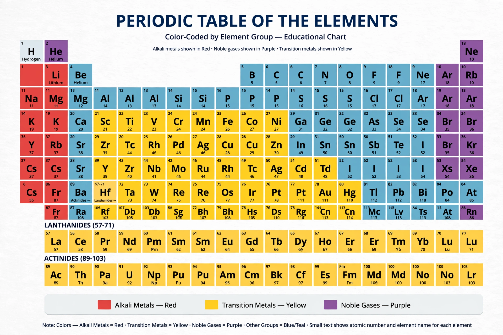

Chemistry

[Image: the periodic table of the elements as a colourful grid of element tiles]Chemistry is the scientific study of the properties and behaviour of matter. It is a physical science within the natural sciences that studies the chemical elements that make up matter and compounds made of atoms, molecules and ions: their composition, structure, properties, behaviour and the changes they undergo during reactions with other substances. Chemistry also addresses the nature of chemical bonds in chemical compounds.
History
Chemistry emerged from alchemy and early metallurgy, medicine and dyeing. Antoine Lavoisier's conservation of mass and list of elements (1789) mark its modern founding; Dalton's atomic theory (1803) and Avogadro's hypothesis followed. Mendeleev's periodic table (1869) organised the elements and predicted new ones. The 20th century fused chemistry with quantum mechanics (chemical bonding explained by orbitals), and produced polymer chemistry, biochemistry's merger with biology, and industrial chemistry at vast scale.
Branches
- Organic chemistry — carbon compounds, the chemistry of life and of most pharmaceuticals and plastics.
- Inorganic chemistry — metals, minerals and organometallics.
- Physical chemistry — energy, kinetics, thermodynamics and spectroscopy.
- Analytical chemistry — identifying and quantifying substances.
- Biochemistry — chemical processes in organisms, from enzymes to DNA.
- Environmental and green chemistry — pollution, sustainability, and safer design.
Importance
Chemistry is often called "the central science" for its connections between physics, biology, geology and medicine. It underpins fertilisers that feed billions, pharmaceuticals, materials from steel to semiconductors, and understanding of processes like ocean acidification under climate change. Professional bodies such as the Royal Society of Chemistry (rsc.org) and journals like Nature Chemistry publish its results.